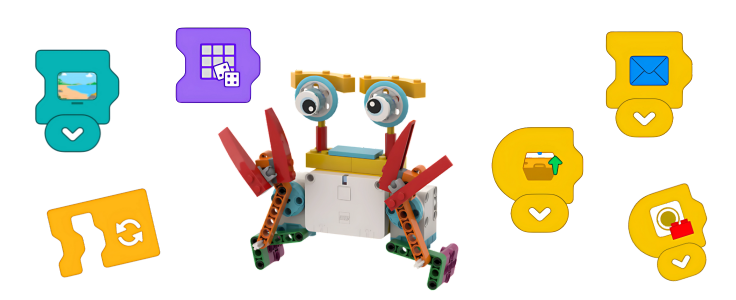

Buổi 1: Ôn tập tổng hợp
Chú cua vui nhộn
Mục tiêu bài học
- ✔️ Ôn tập toàn bộ kiến thức từ REA và REB: động cơ, cảm biến màu, phát/nhận tin, hiển thị, âm thanh…
- ✔️ Ôn tập các kiến thức về động cơ, chuyển động và các khối chức năng cơ bản.
- ✔️ Củng cố kiến thức nền tảng trước khi chuyển sang lập trình bằng khối chữ.
- ✔️ Lắp ráp mô hình “Chú cua vui nhộn”, mô phỏng chuyển động bò ngang.
- ✔️ Lập trình chuyển động cho mô hình bằng cách kết hợp nhiều khối lệnh.
- ✔️ Sử dụng lệnh theo trình tự và điều kiện trong một chương trình hoàn chỉnh.
- ✔️ Rèn luyện kỹ năng làm việc nhóm và trình bày sản phẩm.
- ✔️ Phát triển tư duy logic thông qua việc sắp xếp lệnh theo trình tự.
- ✔️ Vận dụng tư duy điều kiện để điều khiển hành vi chuyển động của mô hình.
- ✔️ Tổng hợp và vận dụng kiến thức đã học vào một bài toán hoàn chỉnh.
- ✔️ Tự tin khi lắp ráp và lập trình mô hình robot.
- ✔️ Chủ động ôn tập và chuẩn bị cho nội dung học nâng cao ở các buổi sau.
- ✔️ Hợp tác tích cực trong nhóm, lắng nghe và chia sẻ ý tưởng.
Giới thiệu nội dung bài học
-
Giới thiệu mô hình
-
Chuẩn bị vật liệu
-
Xây dựng mô hình
-
Bài học: Ôn tập tổng hợp
-
Hoạt động thử thách
-
Tổng kết bài học
Giới thiệu mô hình
Lắp ráp mô hình
Ôn tập tổng hợp
-
🧑💻 Khối lệnh đèn 3x3

Mô tả: Khối lệnh này giúp bạn thiết lập họa tiết hiển thị trên ma trận đèn 3x3.
- Nhấn mũi tên trắng để mở bảng thiết lập.
- Chọn màu và tô vào lưới 3x3 lớn.
- Lưới nhỏ trái: Xóa họa tiết.
- Lưới nhỏ phải: Tô tất cả ô bằng một màu.
- Khối tạm dừng 0.2 giây trước khi thực hiện tiếp.
Ví dụ:

Chương trình này làm Ma trận đèn 3x3 thay đổi nhanh giữa ba họa tiết khác nhau, cách nhau 0.2 giây.
🧑💻 Khối lệnh đèn ngẫu nhiên 3x3

Mô tả: Mỗi lần chạy, ma trận sẽ sáng lên với màu ngẫu nhiên mới.
- Thời gian giữa các lần đổi màu là 0.2 giây.
Ví dụ:

Chương trình này làm đèn liên tục sáng với các màu ngẫu nhiên, mỗi màu hiển thị trong 0.2 giây.
-
🧑💻 Khối lệnh đặt tốc độ

Mô tả: Khối này cho phép thay đổi tốc độ của động cơ kết nối với Hub.
- Các mức tốc độ: 15%, 40%, 70%, 100% (hiển thị bằng vạch xanh lá).
- Tác dụng từ thời điểm đặt khối, không ảnh hưởng tới động cơ đang chạy.
- Mặc định: 40% nếu chưa đặt tốc độ.
Cách sử dụng: Đặt khối này trước khối chạy động cơ.
Ví dụ:

Động cơ xoay 1 vòng với tốc độ mặc định (40%), sau đó xoay ngược với tốc độ 100%.
🧑💻 Khối động cơ ngược chiều kim đồng hồ

Mô tả: Khối lệnh này giúp động cơ xoay ngược chiều kim đồng hồ. Tốc độ có thể thay đổi bằng khối lệnh "Đặt tốc độ động cơ".
- Nhấn vào mũi tên trắng trên khối để mở bảng tùy chọn.
- Dùng nút + hoặc - để tăng/giảm số vòng quay đầy đủ.
- Dùng núm xoay để điều chỉnh theo đơn vị 0.25 vòng.
Cách sử dụng: Kết hợp khối này với khối “Đặt tốc độ” để điều khiển hướng và số vòng quay mong muốn.
Ví dụ:

Chương trình này sẽ làm động cơ xoay ngược chiều kim đồng hồ trong 2.5 vòng.
🧑💻 Khối động cơ theo chiều kim đồng hồ

Mô tả: Khối lệnh này giúp động cơ xoay theo chiều kim đồng hồ. Tốc độ có thể thay đổi bằng khối lệnh “Đặt tốc độ động cơ”.
- Nhấn vào mũi tên trắng trên khối để mở bảng tùy chọn.
- Dùng nút + hoặc - để tăng/giảm số vòng quay đầy đủ.
- Dùng núm xoay để điều chỉnh theo đơn vị 0.25 vòng.
Cách sử dụng: Đặt khối này sau khối “Đặt tốc độ” để điều khiển số vòng quay theo chiều mong muốn.
Ví dụ:

Chương trình này sẽ làm động cơ xoay theo chiều kim đồng hồ trong 2.5 vòng.
🧑💻 Khối dừng động cơ

Mô tả: Khối lệnh này dùng để dừng tất cả các động cơ đang chạy trên Hub.
- Ngay khi khối được thực thi, mọi động cơ đang hoạt động sẽ dừng lại lập tức.
- Không cần chỉ định cổng – khối áp dụng cho tất cả các động cơ đã kết nối.
Cách sử dụng: Đặt khối này sau các khối chạy động cơ để kết thúc hành động một cách rõ ràng.
-
🧑💻 Khối lệnh điều chỉnh tốc độ di chuyển (Movement Speed Block)

Mô tả: Khối lệnh này dùng để thay đổi tốc độ di chuyển của Chú Chuột (mô hình robot dùng 2 động cơ giống nhau).
- Tốc độ hiển thị bằng số vạch màu xanh: 15%, 40%, 70%, hoặc 100%.
- Khối này phải được đặt trước các khối điều khiển chuyển động khác để có hiệu lực.
- Không làm thay đổi động cơ đang chạy và không tự khởi động motor.
- Nhấn mũi tên trắng trên khối để chọn mức tốc độ phù hợp.

Ví dụ

Chương trình này sẽ cho Chú Chuột quay 90 độ ngược chiều kim đồng hồ với tốc độ mặc định (40%), sau đó tiến lên 1 vòng bánh xe với tốc độ 100%.
🧑💻 Khối lệnh di chuyển về phía trước (Move Forward Block)

Mô tả: Khối lệnh này giúp Chú Chuột di chuyển về phía trước theo số vòng quay của bánh xe.
- Chú Chuột là mô hình LEGO sử dụng hai động cơ giống nhau để di chuyển.
- Để thay đổi số vòng quay, hãy nhấn vào con số trên khối lệnh.
- Ví dụ: nhập số 1 sẽ khiến mỗi bánh xe quay đúng 1 vòng.

Ví dụ

Chương trình này sẽ khiến Chú Chuột di chuyển về phía trước hai vòng quay bánh xe.
🧑💻 Khối lệnh di chuyển lùi (Move Backward Block)

Mô tả: Khối lệnh này giúp Chú Chuột di chuyển lùi về phía sau theo số vòng quay bánh xe.
- Chú Chuột là mô hình LEGO sử dụng hai động cơ giống nhau để di chuyển.
- Để thay đổi số vòng quay, hãy nhấn vào con số trên khối lệnh.
- Ví dụ: nhập số 1 sẽ khiến mỗi bánh xe quay đúng 1 vòng lùi.

Ví dụ

Chương trình này sẽ khiến Chú Chuột di chuyển lùi lại 2 vòng quay bánh xe.
🧑💻 Khối lệnh quay ngược chiều kim đồng hồ (Turn Counterclockwise Block)

Mô tả: Khối lệnh này giúp Chú Chuột quay ngược chiều kim đồng hồ.
- Chú Chuột là mô hình LEGO sử dụng hai động cơ giống nhau để di chuyển.
- Để điều chỉnh góc quay, hãy nhấn vào con số trên khối lệnh.
- Ví dụ: nhập số 1 sẽ khiến Chú Chuột quay 90 độ.
- Lưu ý: nếu thay đổi kích thước bánh xe hoặc khoảng cách giữa các bánh xe, góc quay thực tế sẽ thay đổi.

Ví dụ

Chương trình này sẽ khiến Chú Chuột quay 360 độ ngược chiều kim đồng hồ.
🧑💻 Khối lệnh quay cùng chiều kim đồng hồ (Turn Clockwise Block)
Mô tả: Khối lệnh này giúp Chú Chuột quay cùng chiều kim đồng hồ.
- Chú Chuột là mô hình LEGO sử dụng hai động cơ giống nhau để di chuyển.
- Để điều chỉnh góc quay, hãy nhấn vào con số trên khối lệnh và nhập số vòng quay mong muốn.
- Ví dụ: nhập số 1 có thể làm Chú Chuột quay khoảng 90 độ, tùy vào thiết lập mô hình.
- Lưu ý: nếu bạn thay đổi kích thước bánh xe hoặc khoảng cách giữa các bánh, góc quay thực tế sẽ bị ảnh hưởng.

Ví dụ
Chương trình này sẽ khiến Chú Chuột quay 360 độ theo chiều kim đồng hồ.
🧑💻 Khối lệnh dừng di chuyển (Stop Moving Block)

Mô tả: Khối lệnh này dùng để dừng cả hai động cơ của Chú Chuột.
- Chú Chuột là mô hình LEGO di chuyển bằng hai động cơ giống nhau.
- Khi được chạy, khối này sẽ dừng mọi chuyển động đang xảy ra.
-
🔊 Khối Âm Thanh Động Vật (Animal Sound Block)

Mô tả: Khối này sẽ phát ra âm thanh của một loài động vật. Có thể chọn từ 8 âm thanh động vật khác nhau.
- Để chọn âm thanh, hãy nhấn vào mũi tên trắng hướng xuống trên khối, sau đó chọn một con số trong menu.
- Nếu chọn biểu tượng xúc xắc, khối sẽ phát một âm thanh động vật ngẫu nhiên mỗi lần được chạy.
Ví dụ

Chương trình này sẽ phát âm thanh động vật số 5.
🔉 Khối Hiệu Ứng Âm Thanh (Sound Effect Block)

Mô tả: Khối này sẽ phát một hiệu ứng âm thanh. Có 8 hiệu ứng khác nhau để lựa chọn.
- Để chọn hiệu ứng âm thanh, hãy nhấn vào mũi tên trắng trên khối, sau đó chọn một con số trong menu.
- Nếu chọn biểu tượng xúc xắc, mỗi lần chạy khối sẽ phát ra một hiệu ứng âm thanh ngẫu nhiên.
Ví dụ

Chương trình này sẽ phát hiệu ứng âm thanh số 5.
🎵 Khối Phát Nhạc (Music Block)

Mô tả: Khối này sẽ phát một bản nhạc thông qua thiết bị.
- Để chọn bản nhạc sẽ phát, hãy nhấn vào mũi tên trắng trên khối và chọn một con số trong menu.
- Nếu chọn biểu tượng xúc xắc, mỗi lần chạy khối sẽ phát một bản nhạc ngẫu nhiên.
Ví dụ

Chương trình này sẽ phát bản nhạc số 5.
🎤 Khối Ghi Âm (Record Sound Block)


Mô tả: Khối này cho phép bạn ghi lại âm thanh của chính mình và lưu lại thành một khối mới để sử dụng trong chương trình.
- Để ghi âm mới, nhấn vào khối "Record Sound" để mở menu ghi âm.
- Nhấn nút ghi hình tròn ở giữa để bắt đầu ghi âm. Khi hoàn tất, nhấn nút dừng, rồi nhấn dấu kiểm để lưu ghi âm.
- Bản ghi âm của bạn sẽ được lưu thành một khối mới.
- Để chỉnh sửa hoặc xóa bản ghi, nhấn chuột phải vào khối trong bảng khối. Trên thiết bị cảm ứng, giữ chạm để mở menu tương tự.
- Lưu ý: nếu khối ghi âm đã được kéo vào vùng lập trình, bạn không thể xóa nó từ bảng khối.
Ví dụ

Chương trình này sẽ phát bản ghi âm số 1, sau đó phát tiếp bản ghi âm số 2.
-
🧑💻 Khối cảm biến màu sắc

Mô tả:
- Khối này được sử dụng để lập trình Cảm biến màu sắc.
- Khối sẽ kiểm tra màu sắc nào ở phía trước nó.
- Khối sẽ chạy tất cả các khối được gắn vào nó nếu Cảm biến màu sắc phát hiện thấy màu đã chọn.
- Để thay đổi màu sắc, hãy nhấn mũi tên "hướng xuống" màu trắng trên khối.
- Sau đó chọn một màu từ menu.
Ví dụ

Chương trình này sẽ phát Hiệu ứng âm thanh 1 bất cứ lúc nào Cảm biến màu sắc phát hiện thấy màu “xanh lam”.
🧑💻 Khối hiển thị văn bản


Mô tả:
- ✔️ Khối này sẽ hiển thị văn bản trên cửa sổ hiển thị. Nhấn nút toàn màn hình ở phía trên cùng bên trái để hiển thị văn bản ở chế độ toàn màn hình.
- ✔️ Để thay đổi văn bản, hãy nhấn vào trường văn bản trên khối. Sau đó bắt đầu nhập văn bản mới.
Ví dụ

Chương trình này sẽ hiển thị một đồng hồ đếm ngược trong cửa sổ hiển thị. Màn hình sẽ đếm lùi từ "2" xuống "1" trong vài giây.
🧑💻 Khối hiển thị hình ảnh


Mô tả:
- ✔️ Khối này sẽ hiển thị hình ảnh trên cửa sổ hiển thị. Nhấn nút toàn màn hình ở phía trên cùng bên trái cửa sổ hiển thị để hiện hình ảnh ở chế độ toàn màn hình.
- ✔️ Để thay đổi hình ảnh, hãy nhấn mũi tên "hướng xuống" màu trắng trên khối. Sau đó chọn hình ảnh bạn muốn hiển thị.
- ✔️ Việc chọn xúc xắc sẽ hiển thị một hình ảnh ngẫu nhiên mỗi khi khối đó chạy.
Ví dụ:

Chương trình này sẽ hiển thị hình ảnh gấu Bắc Cực, chờ 1 giây sau đó hiển thị một hình ảnh ngẫu nhiên.
🧑💻 Khối hiển thị toàn màn hình

Mô tả:
- ✔️ Khối này sẽ thay đổi cách hiển thị hình ảnh hoặc văn bản.
- ✔️ Hình ảnh và văn bản có thể được hiển thị toàn màn hình hoặc trong một cửa sổ nhỏ hơn trên Canvas lập trình.
- ✔️ Để thay đổi định dạng hiển thị, hãy nhấn mũi tên "hướng xuống" màu trắng trên khối.
- ✔️ Sau đó chọn chế độ xem toàn màn hình (hai mũi tên màu xanh lá).
- ✔️ Hoặc chọn chế độ xem cửa sổ nhỏ hơn từ menu (một mũi tên màu xanh lá).
Ví dụ:

Chương trình này sẽ hiển thị đồng hồ đếm ngược trong cửa sổ hiển thị. Màn hình sẽ đếm lùi từ "2" xuống "1" trong vài giây.
🧑💻 Khối cảm biến nghiêng

Mô tả:
- Khối này sẽ tạo chương trình cho Cảm biến con quay hồi chuyển tích hợp. Khối nghiêng được sử dụng để kiểm tra hướng của Cảm biến con quay hồi chuyển tích hợp trên Bộ não trung tâm cỡ nhỏ của LEGO® Technic™.
- Khối này sẽ làm chạy tất cả các khối được gắn với nó nếu Bộ não trung tâm bị nghiêng theo hướng được chỉ định.
- Khối này có thể kiểm tra xem liệu Bộ não trung tâm có nghiêng về trước, phía sau, bên trái, bên phải, bất kỳ hướng nào trong số đó hoặc nằm ngang hay không.
- Để thay đổi hướng nghiêng được chỉ định, hãy nhấn mũi tên "hướng xuống" màu trắng trên khối. Sau đó chọn mũi tên tương ứng với hướng mong muốn.
Ví dụ

Chương trình này sẽ phát Hiệu ứng âm thanh 1 bất kỳ khi nào Bộ não trung tâm nghiêng về phía trước.
🧑💻 Khối phát tin

Mô tả:
- Khối này cho phép bạn chạy đồng thời nhiều ngăn xếp lập trình.
- Khối Gửi thông báo phải được sử dụng cùng với Khối thông báo nhận
- Những khối này cũng cần phải có cùng màu.
- Để thay đổi màu sắc của thông báo, hãy nhấn mũi tên “hướng xuống” màu trắng trên khối. Sau đó chọn một màu.
Ví dụ

Chương trình này chứa hai ngăn xếp lập trình. Ngăn xếp trên sẽ bắt đầu khi nhấn Nút phát. Ngăn xếp này phát Hiệu ứng âm thanh 1 và sau đó gửi thông báo màu xanh lam. Việc gửi thông báo màu xanh lam sẽ bắt khởi động ngăn xếp lập trình dưới, điều này sẽ phát Hiệu ứng âm thanh 2 khi ngăn xếp trên chuyển Đèn sang màu vàng.
🧑💻 Khối nhận tin

Mô tả:
- Khối này cho phép bạn chạy đồng thời nhiều ngăn xếp lập trình.
- Phải sử dụng Khối Nhận thông báo cùng với Khối gửi thông báo cùng màu để khối này hoạt động.
- Để thay đổi màu sắc của thông báo, hãy nhấn mũi tên “hướng xuống” màu trắng trên khối. Sau đó chọn một màu.
Ví dụ

Chương trình này chứa hai ngăn xếp lập trình. Ngăn xếp trên sẽ bắt đầu khi nhấn Nút phát. Ngăn xếp này phát Hiệu ứng âm thanh 1 và sau đó gửi thông báo màu xanh lam. Việc gửi thông báo màu xanh lam sẽ bắt khởi động ngăn xếp lập trình dưới, điều này sẽ phát Hiệu ứng âm thanh 2 khi ngăn xếp trên chuyển Đèn sang màu vàng.
Tổng kết buổi học
Loading question...Score: 0 / 5